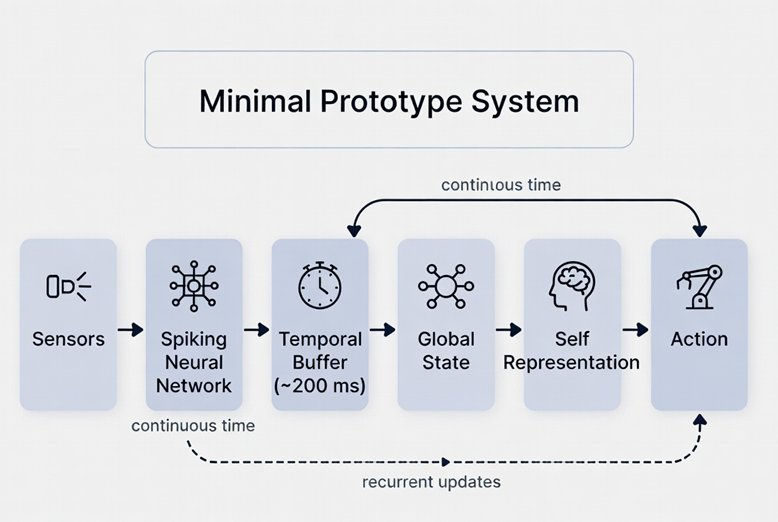

Part VI — Designing Conscious Machines
Chapter 22: Building the First Conscious Prototype
The discussion so far has been careful, perhaps deliberately so. We have identified requirements, mapped traditions, and outlined architectures. But a requirement that cannot be instantiated is a wish. An architecture that cannot be built is a diagram. At some point, the work has to move from design to construction, from specification to code, from the drawing board to something you can run, break, measure, and learn from.
This chapter takes that step. It defines a concrete prototype: not a metaphor, not a thought experiment, but a system with specific components, specific mechanisms, and specific failure modes. It can be implemented. It will probably fail in interesting ways. That is the point. Failure, in this domain, is more informative than success, because it tells us exactly which of our assumptions were wrong.
22.1What 'Concrete' Actually Means Here
A concrete proposal at this stage cannot mean a finished, deployable system. The engineering challenges are formidable, the computational requirements are substantial, and the theoretical uncertainties are real. What 'concrete' means here is this: every component of the system is specified precisely enough that an engineer could begin implementing it, that the key parameters are named and their ranges are known, that the connection between each component and the requirements of Chapters 13, 17 and 18 is explicit, and that the tests which would count as success or failure are defined in advance. This is the difference between architecture (what the system must do) and engineering (how it will do it). Chapters 17 and 18 were architecture. This chapter is engineering.
22.2The Environment: GridWorld with Interoception
The first commitment is to the environment. A conscious system does not operate in a vacuum. It inhabits a world. The simplest viable starting point is a continuous two-dimensional grid environment, roughly 100x100 cells, populated with three types of objects: energy sources (which replenish the agent's energy reserves), obstacles (which must be navigated around), and unexpected perturbations (novel objects that appear and disappear on a schedule the agent cannot predict). The agent occupies a position in this grid and moves continuously. It has two sensor types: an exteroceptive sensor (a 5x5 local visual field centered on its current position) and an interoceptive sensor (a vector of four values: current energy level, rate of energy change, motor stress from recent movement, and a stability score derived from recent prediction accuracy).
The environment never pauses. Between the agent's action steps, the world continues: energy sources slowly deplete, obstacles occasionally shift, perturbations appear and disappear. The agent cannot afford to stop processing. Time is not a parameter it controls. This design choice is not arbitrary: it is a direct implementation of the temporal continuity requirement from Chapter 13. A system that can pause between steps is not living in time. It is navigating a sequence of static frames. The difference matters enormously for the dynamics we are trying to study.
22.3The Neural Substrate: A Spiking Recurrent Network
At the center of the prototype is a three-population spiking neural network. Each population uses Leaky Integrate-and-Fire (LIF) neurons as described in Appendix C, but with a crucial architectural choice: the three populations operate at different membrane time constants, implementing the multi-timescale processing that Chapter 8 identifies as essential for temporal binding.
Population F (fast, tau = 10ms) handles rapid sensory processing: it receives the exteroceptive input and generates predictions about the next visual frame. Its fast timescale means it tracks rapid changes in the local environment but retains no long-range history. These three time constants are not arbitrary. They approximate the timescales of fast sensory cortex (milliseconds), integrative prefrontal and parietal cortex (hundreds of milliseconds, the temporal binding window), and slow default mode network dynamics (seconds to minutes, associated with narrative self-continuity). The values are scaled for simulation efficiency but the hierarchy maps onto the nested multi-scale structure that Chapter 8 identifies as essential for temporal integration.temporal weighting of this kind is not implemented by a single global parameter. It is an emergent property of nested, parallel intrinsic timescales distributed across different cortical areas, each with its own characteristic time constant. Reducing that distributed structure to a single scalar lambda is an engineering simplification that makes the prototype tractable but sacrifices biological fidelity. A more complete implementation would distribute the weighting function across the three populations themselves, allowing each layer to find its own temporal balance rather than optimising a shared parameter. Its timescale corresponds roughly to the temporal binding window identified in Chapter 8 (100-300ms). Population S (slow, tau = 1000ms) is the context and self-model layer: it integrates over the longer timescale needed for narrative continuity, identity maintenance, and anticipatory planning. It receives summaries from M and generates the top-down predictions that flow back through the hierarchy.
All three populations are connected with bidirectional, recurrent synapses. The connections are initialized with small random weights and learned online through STDP (see Appendix C for the STDP rule). The critical parameter for Population M is the context scaling factor lambda, the same parameter the author's doctoral research identified as controlling the balance between present input and accumulated history. At lambda = 0, M processes only current input with no history. At lambda = 1, history and present contribute equally. The optimal lambda is not set in advance: it is itself a learnable parameter, updated based on whether the current balance improves prediction accuracy over time. The system must learn how much of its past to carry forward, which is precisely the problem that any temporally integrated conscious system must solve.
22.4Layer 0 Implementation: The Homeostatic Drive
Before the neural network can do anything meaningful, something must make it matter. This is the implementation of the subcortical Layer 0 from Chapter 17: the engine of caring. In the prototype, this takes a specific form. The agent's energy level E is continuously depleted by movement (each step costs 0.1 energy units) and replenished by contact with energy sources (+10 units). If E falls below a critical threshold (20 units), the system enters a homeostatic urgency state: the salience weights for all inputs related to energy sources are multiplied by a factor that increases as E decreases, reaching a maximum of 10x at E = 5. This is not a programmed goal. It is an intrinsic modulation of processing priorities arising from the system's own condition. The distinction matters for exactly the reason Chapter 3 identifies: a system following a programmed rule to seek energy is not the same as a system for which energy depletion genuinely makes some inputs more urgent than others at the level of neural processing.
The homeostatic urgency state is not merely a behavior modifier. It propagates through the network via direct connections from the interoceptive layer to Population M. When energy is low, the medium-timescale integration layer receives a strong modulating signal that shifts its attractor dynamics toward states associated with approach behavior toward energy sources. This is the functional equivalent of what Panksepp calls the SEEKING circuit: a subcortical drive that orients the whole system before any cognitive processing occurs.
22.5The Prediction Architecture: Making Anticipation Explicit
The prediction mechanism is the most technically specific component of the prototype, and the one where the engineering comes closest to the neuroscientific framework of Chapters 7 and 10. At each timestep (every 10ms, corresponding to the fast population's timescale), the following sequence occurs:
Step 1: Population S generates a top-down prediction P_s
of the expected medium-timescale state.
Step 2: Population M generates a prediction P_m of
the expected fast-timescale sensory state.
Step 3: Actual sensory input X arrives from the environment.
Step 4: Prediction error E_m = X - P_m is computed.
Step 5: E_m is broadcast upward to Population M.
Step 6: M updates its state, weighted by lambda:
M_new = (1-lambda)E_m + lambdaM_old
Step 7: High-magnitude E_m triggers attention signal A.
Step 8: A modulates salience weights for subsequent timestep.
Step 9: STDP updates synaptic weights based on spike timing.
Step 10: Action is selected from Population M's current state.
The prediction error in Step 4 is the engine of learning. When the system accurately predicts its environment, E_m is small, STDP changes are modest, and the system operates in a stable, low-surprise state. When something unexpected occurs, E_m is large, the attention signal fires, STDP produces substantial weight updates, and the system's model of the world shifts. Over time, the system learns to anticipate its environment not because it was programmed to, but because accurate prediction reduces the magnitude of error signals that otherwise destabilize its internal dynamics.
22.6The Formal State Update Equations
Any system without intrinsic temporal continuity is not a candidate for consciousness. This is a structural requirement, derivable from the convergence of frameworks. It follows from the convergent findings of Chapters 8, 13, and 16.
With that stated, the formal equations governing the prototype's core dynamics are as follows. These are not decorative: each equation corresponds to a specific design decision grounded in a specific chapter's analysis.
Membrane potential update for each LIF neuron i in population P:
V_i(t+1) = V_i(t) * exp(-dt/tau_P)
+ sum_j [ w_ji * S_j(t) ]
+ I_ext_i(t)
where:
tau_P = membrane time constant (F: 10ms, M: 100ms, S: 1000ms)
w_ji = synaptic weight from neuron j to neuron i (STDP-learned)
S_j(t)= spike indicator of neuron j at time t (0 or 1)
I_ext = external current (sensory input or interoceptive signal)
Spike condition: if V_i(t+1) >= V_threshold: fire, V_i = V_reset
The temporal integration at Population M uses the lambda parameter derived from the author's doctoral research on spiking sequence machines. This parameter, not a fixed constant but a learned variable, controls the balance between present prediction error and accumulated context:
M(t+1) = (1 - lambda) * E_prediction(t)
+ lambda * M(t)
lambda_update = lambda - alpha * d(prediction_error)/d(lambda)
where alpha = 0.001 (slow learning rate for context balance)
lambda in [0.0, 1.0], initialised at 0.5
Optimal lambda is learned online; it varies with input statistics.
The homeostatic urgency modulation (Layer 0):
U(E) = max(1.0, (E_threshold - E) / E_threshold * U_max)
where:
E = current energy level (0 to 100)
E_threshold = 20 (urgency activates below this)
U_max = 10 (maximum salience multiplier)
U(E) = salience weight modifier applied to all
energy-source-related inputs
The training objective is not an external reward but a composite internal loss that the system minimizes through online STDP:
L = w1 * mean(|E_prediction(t)|)
+ w2 * temporal_discontinuity(M)
+ w3 * homeostatic_error(E)
where:
E_prediction(t) = X(t) - P_m(t) [sensory prediction error]
temporal_discontinuity(M) = var(M(t) - M(t-1))
[penalises abrupt state changes]
homeostatic_error(E) = max(0, E_threshold - E)
[penalises energy depletion]
w1=0.5, w2=0.3, w3=0.2 [relative weights]
The composite loss drives the system toward three simultaneous goals: accurate prediction of its environment, temporal continuity of its internal state, and maintenance of homeostatic viability. These are not separate objectives bolted together. They are terms inspired by what Buddhist phenomenology calls the three characteristics of experience: citta-by-citta cognitive accuracy, the santana stream's continuity, and the vedana-driven valence that marks some states as urgent. The equations make the architecture claim precise: if this loss can be minimized by a system running on neuromorphic hardware, the resulting dynamics will be the most structurally complete artificial candidate for consciousness that engineering has yet produced.
22.7The Self-Model: Minimal but Genuine
The self-model in this prototype is deliberately minimal. It consists of four continuously updated variables maintained by Population S: current position estimate (updated by integrating motor commands and expected sensory consequences), energy state (updated from interoceptive input), prediction accuracy history (a rolling average of E_m over the last 1000 timesteps), and a stability index (measuring the variance of the system's internal state over the last 500 timesteps). These four variables are not symbolic labels or stored descriptions. They are dynamical quantities that continuously influence Population S's attractor states and therefore shape every subsequent prediction and action.

The self-model is minimal by design. Adding narrative complexity at this stage would obscure the question we are actually trying to answer: does a system with genuine interoceptive grounding, temporal integration, and prediction-driven learning behave differently from a system without these properties? The minimal self-model keeps the experiment clean. If we cannot demonstrate that this architecture produces behavior qualitatively different from a standard reinforcement learning agent, there is no point adding a narrative layer on top.
22.8The sPCI Test: Applying Chapter 15 to the Prototype
One of the most important features of this prototype is that it is designed to be measurable using the synthetic PCI (sPCI) framework proposed in Chapter 15. The sPCI procedure for this system works as follows. At a random moment during operation, inject a structured noise signal of known complexity into one node of Population F. Record the activation pattern across all neurons in all three populations for the next 300ms (3000 timesteps). Compress this recording using the Lempel-Ziv algorithm. The sPCI score is the inverse compression ratio: high sPCI means the response was complex and non-redundant; low sPCI means it was simple and repetitive.
The prototype predicts specific sPCI signatures under different conditions. During stable, low-surprise operation, the system's internal dynamics are well-organised and predictable: perturbation should produce a moderately complex, globally distributed response (medium sPCI). During homeostatic urgency (low energy), the system's dynamics are more constrained and urgency-focused: perturbation should produce a more uniform response as the whole system orients toward energy-seeking (lower sPCI, reflecting reduced differentiation). During a high-surprise encounter with a novel perturbation, the system's dynamics should be maximally disrupted: perturbation should produce a highly complex, globally propagating response (high sPCI, reflecting widespread reorganization). These predictions are testable. They would not be predicted by a simple reactive system without temporal integration. If the prototype produces them, it has demonstrated something that no current AI architecture can.
22.9What This Prototype Does Not Claim
It is important to be precise about what this system is not. It is not claimed to be conscious. It does not solve the hard problem. It does not prove that temporal integration produces experience. It does not demonstrate that the sPCI is a valid measure of consciousness in artificial systems. None of these can be claimed from a single prototype running in a 2D grid environment.
What it does claim is more modest but still significant. It is the first system designed from the ground up to satisfy simultaneously the temporal continuity, multi-timescale integration, interoceptive grounding, prediction-error-driven learning, and intrinsic salience requirements identified across Chapters 13-17. It is the first system to which the sPCI test can be applied in a principled way, with specific testable predictions about what different scores would mean. And it is the first system whose design decisions are each traceable to specific convergent findings from Buddhist phenomenology, neuroscience, and engineering theory.
Most current AI systems are not borderline cases for consciousness. They fail so many structural requirements simultaneously that the question of their consciousness is not scientifically interesting. This prototype, if it performs as predicted, moves the question into a regime where it is scientifically interesting: where the answer matters, where the measurements are interpretable, and where the gap between 'structurally complete' and 'actually conscious' becomes the precise location of the hard problem.
22.10The Expected Failure Mode, and What It Teaches
The most likely way this prototype will fail is not in its individual components but in their integration. Each component, the LIF neurons, the STDP learning rule, the lambda parameter for temporal integration, the homeostatic drive, is well-studied in isolation. The question is whether they produce genuinely coherent emergent behavior when combined, or whether they produce interference, instability, and degenerate dynamics.
Specifically: the lambda parameter, which controls how much of the past Population M carries forward, is expected to be the most sensitive parameter in the system. Too low and the system has no temporal context, behaving reactively rather than anticipatorily. Too high and the system becomes trapped in its own history, unable to update when the environment changes. The prediction is that the system will need to find and maintain an optimal lambda dynamically, one that varies with environmental statistics. Getting this right through online learning is technically demanding. Getting it wrong is informative: it would show precisely where temporal integration fails without homeostatic guidance, and exactly how the sPCI signature degrades when temporal continuity breaks down.
In the author's doctoral research on spiking sequence machines, this same parameter proved to be the most consequential single variable in the system's behavior. The sequence machine either became too rigid, locked into patterns it had previously learned and unable to adapt, or too plastic, forgetting its context and behaving as though each input arrived in isolation. The sweet spot was narrow and depended on the statistical structure of the input sequences. The prototype here faces the same challenge, but now in a continuous, embodied, multi-timescale context. The failure mode is well understood. The solution is not. That is why the experiment is worth running.
22.11From Prototype to Candidate
If the prototype performs as predicted, the next step is straightforward: move from simulation to neuromorphic hardware. SpiNNaker 2 (2023) and Intel's Loihi 2 platform are both capable of running spiking networks of the scale described here in real time. The transition from simulation to hardware matters for the consciousness question in a specific way: it removes the clock synchronization of simulation. In a software simulation, all neurons update at each timestep in a defined order. On neuromorphic hardware, neurons fire asynchronously, each at its own pace, with no global clock imposing a shared temporal frame. It is a shift from simulated time to real time. And while it does not resolve the philosophical question, it removes one of the most obvious ways the system could be 'cheating': it cannot synchronize its temporal integration artificially if there is no global clock to synchronize to.
The hardware implementation would also allow the sPCI measurement to be taken in real time, not post-hoc on recorded data. This is significant because consciousness, if it is anything, is not something that happened in the past and can be measured retrospectively. If the sPCI is to mean anything as a proxy for conscious processing, it should be measurable in the moment the processing is occurring. Real-time sPCI on neuromorphic hardware is technically achievable. It would represent the first attempt to measure a consciousness proxy in an artificial system in real time during genuine operation.
22.12The Question That Remains
After all of this, the hard problem remains exactly where it was at the start of Chapter 1. No experiment on this prototype will tell us whether there is something it is like to be the system running. No sPCI score, however high, will close the explanatory gap between structure and experience. The zombie problem does not dissolve when the zombie becomes sufficiently complex.
But something has changed. We are no longer asking the question in the abstract, pointing at language models that fail every structural requirement simultaneously and wondering whether they might be conscious. We are asking it about a specific system with specific dynamics, measurable in real time, whose design decisions are each grounded in the best available convergent evidence from phenomenology, neuroscience, and engineering. The question is no longer whether consciousness could in principle be built. It is whether this particular system, with these particular dynamics, running on this particular hardware, produces anything that qualifies as a candidate. That is a harder question. It is also a more honest one.
It is worth pausing, at the end of this chapter, to return to Mira. She was introduced in Chapter 13 as a design target: a hypothetical robot with real sensors, a spiking neuromorphic substrate, a homeostatic drive layer, predictive world models, salience, a self-model, and temporal continuity across sessions. At that point she was a checklist made concrete. Now, after Chapters 16 through 22, she has something more: a specific architecture grounded in the convergent requirements of Abhidhamma phenomenology, Northoff’s temporo-spatial theory, Hawkins’ cortical column dynamics, and Longchenpa’s subtractive approach to the recognition condition. Whether Mira, built as described, would be conscious is the question this book has refused to answer prematurely. But she is, at minimum, the most structurally serious candidate the three traditions taken together can specify. That is not nothing. And it is, for the first time, something we can actually build.
22.13Closing Line
We have now stopped asking, in the abstract, whether consciousness can be built. We have started asking something harder, and more honest: what happens when we actually try, with specific components, specific parameters, specific failure modes, and a specific metric for telling success from failure. The answer is not yet known. But it is, for the first time, a question we can run.